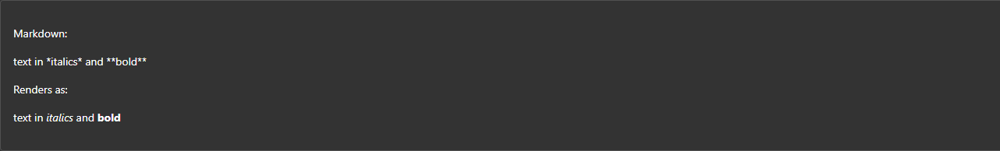

Want to display markdown in your Blazor app? Of course you do.
The FluentUI Blazor components have you covered in their 🧪 lab section.
There's a little bit of work to bring in the component as it's not shipped in the library itself as it contains a dependency of markdig.
Please see my previous post Blazor - FluentUI - Code Snippet for the setup of Highlight.js as this is used by the following component.
Create a new folder in your Shared project.
📁 \Infrastructure
Copy the following files from examples/Demo/Shared/Infrastructure
- AppVersionService.cs
- CacheStorageAccessor.cs
- HttpBasedStaticAssetService.cs (This is need for Blazor WASM)
- IAppVersionService.cs
- IStaticAssetService.cs
- ServerStaticAssetService.cs (This is need for Blazor Server)
- ServiceCollectionExtensions.cs
Then copy the following component files from examples/Demo/Shared/Components
- MarkdownSection.razor
- MarkdownSection.razor.cs
- MarkdownSection.razor.css
- MarkdownSection.razor.js
- MarkdownSectionPreCodeExtension.cs
- MarkdownSectionPreCodeRenderer.cs
- MarkdownSectionPreCodeRendererOptions.cs
Something from wwwroot/js/
- CacheStorageAccessor.js
Next you want to update a few places.
In CacheStorageAccessor.cs swap the path to your project.
public class CacheStorageAccessor(IJSRuntime js, IAppVersionService vs) : JSModule(js, "./_content/FluentUI.Demo.Shared/js/CacheStorageAccessor.js")
to
JSModule(js, "./_content/[PROJECT_NAME]/js/CacheStorageAccessor.js")
In ServiceCollectionExtensions.cs remove the DemoNavProvider unless you are using it. I also renamed to AddFluentUIDemoClientServices() to AddFluentUIClientServices(). Amend accordingly.
In MarkdownSection.razor.cs swap the path again:
_jsModule = await JSRuntime.InvokeAsync<IJSObjectReference>("import",
"./_content/FluentUI.Demo.Shared/Components/MarkdownSection.razor.js");
to
_jsModule = await JSRuntime.InvokeAsync<IJSObjectReference>("import",
"./_content/[PROJECT_NAME]/MarkdownSection.razor.js");
Update the namespaces from namespace FluentUI.Demo.Shared.* to yours.
In Program.cs of your main app add the helper function AddFluentUIClientServices() from ServiceCollectionExtensions.cs so everything is setup.
builder.Services.AddFluentUIClientServices();
Finally you want to add the component to your app.
You can either use Content and add you markdown directly:
<MarkdownSection Content="text in *italics* and **bold**"></MarkdownSection>
Or you can use the StaticAssetService to pull in some files.
Firstly create a new folder 📁 called docs in your wwwroot of your Shared project. Then add the path in the FromAsset property.
<MarkdownSection FromAsset="./_content/[PROJECT_NAME]/docs/CodeSetup.md"></MarkdownSection>
What's cool about this is that you can pass it any MD file so taking one directly from GitHub with the RAW url and it'll also work.
<MarkdownSection FromAsset="https://raw.githubusercontent.com/microsoft/fluentui-blazor/refs/heads/dev/examples/Demo/Shared/wwwroot/docs/DesignTokens.md"></MarkdownSection>
One thing I need to check is how it handles images, but that's for another day.
Example
text in *italics* and **bold**
text in italics and bold

🔗 Links
https://dotnet.microsoft.com/en-us/apps/aspnet/web-apps/blazor
https://learn.microsoft.com/en-us/aspnet/core/blazor/?view=aspnetcore-9.0
https://learn.microsoft.com/en-us/fluent-ui/web-components/integrations/blazor
https://learn.microsoft.com/en-us/shows/open-at-microsoft/exploring-the-fluent-ui-blazor-components